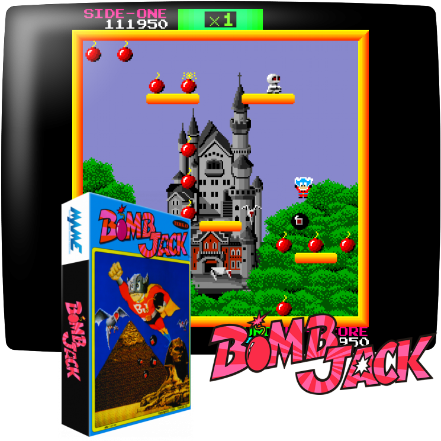
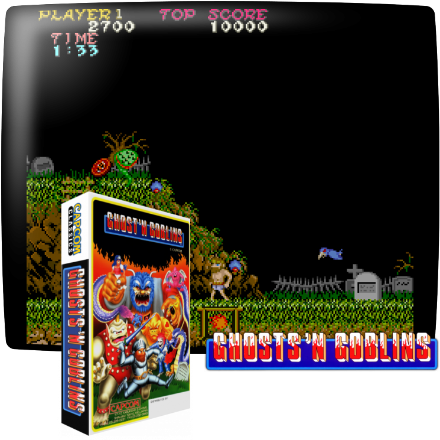
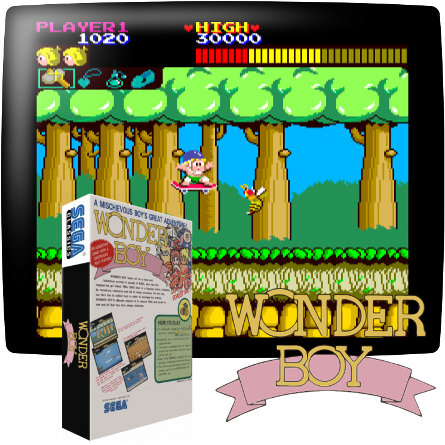
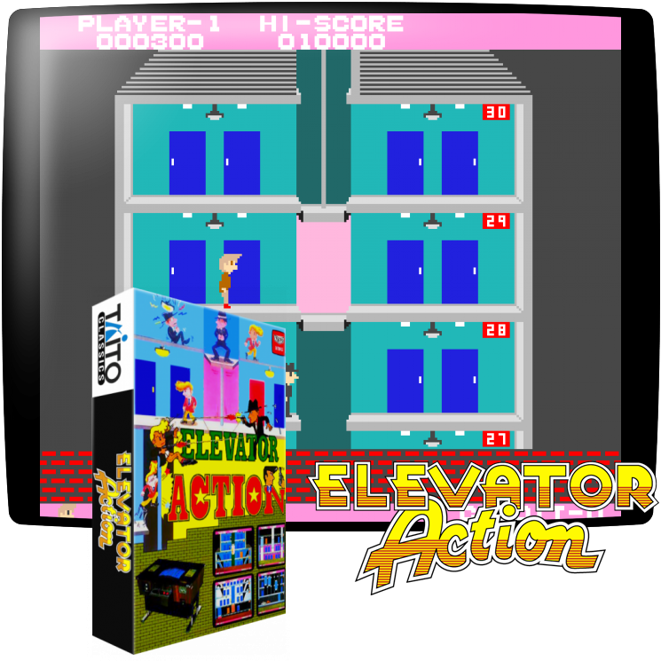
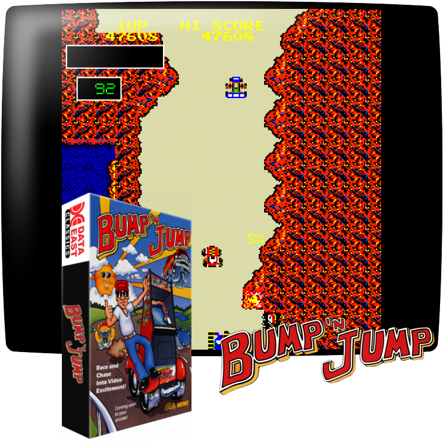
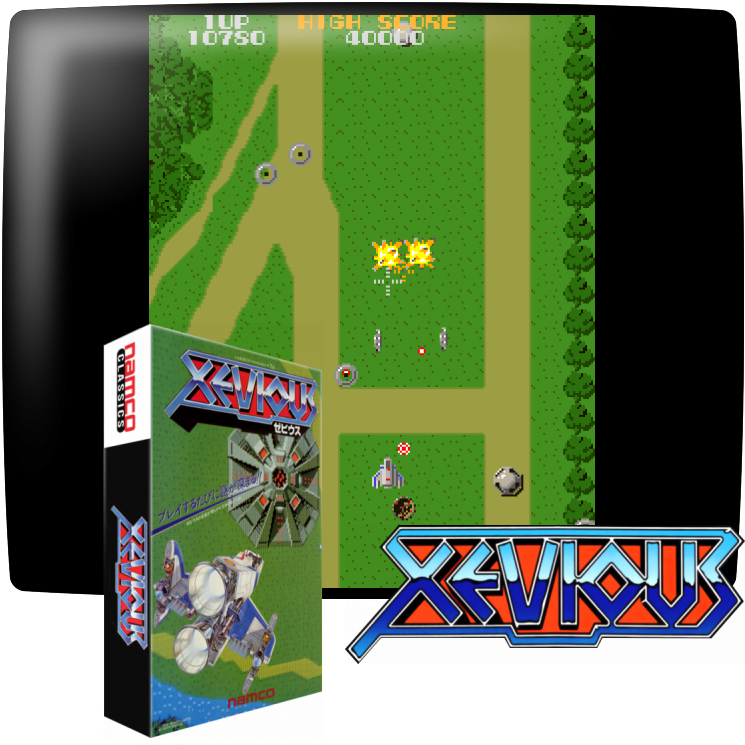
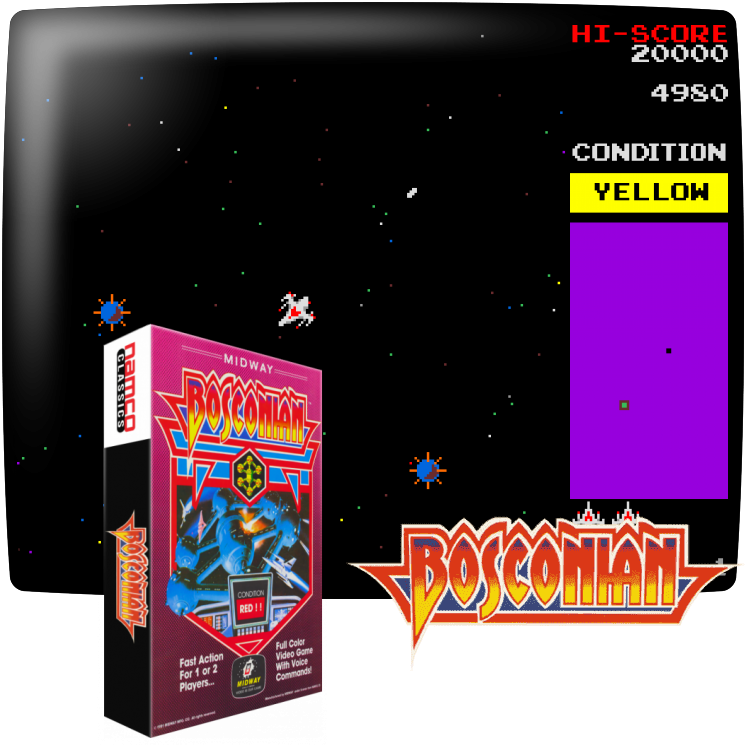
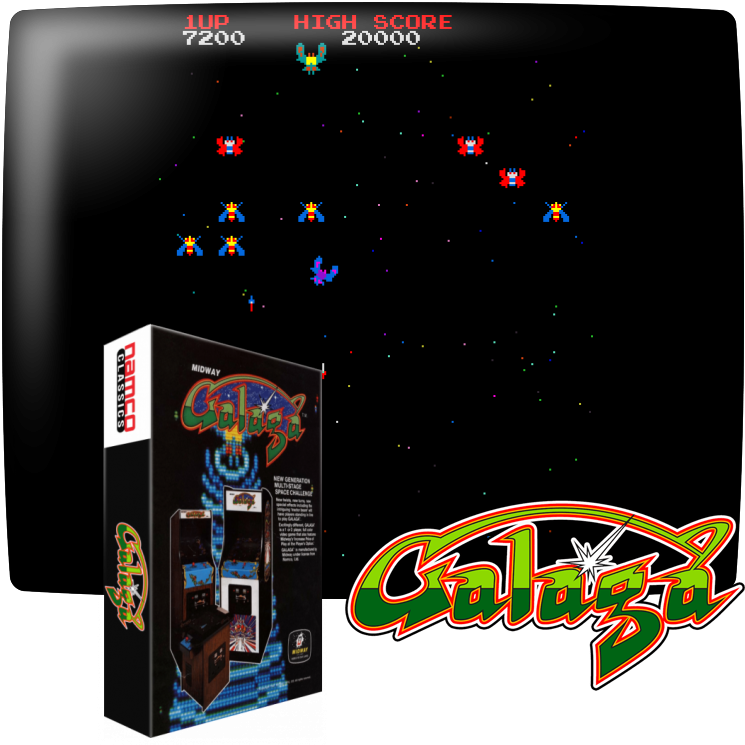

Arcade Machine Cores
The MEGA65 can also be turned into an arcade game machine. As many early arcade games rely on fast reaction times, an FPGA-based recreation is much more faithful than software emulation. Unfortunately, arcade games usually require a complete FPGA slot for a single game.
Important Details about Arcade Games
To recreate the game two parts are needed: An FPGA Core and image files for the ROMs. The Core is like a Core for a home computer and only has the “hardware” part of the machine. It still requires the actual software, which is a seperate file, even if the Core can only play one specific game. Arcade Game ROMs are available in many flavours on internet, but the Core usually requires a very specific format. You need to read the instructions per Core very carefully and follow them to the letter to create the correct files. This in some cases requires Python on your computer. Due to copyright and licensing reasons, there is no official archive where Cores and ROMs sre bundled ready to use.
Some Arcade Machine Cores support “DIP Switches”. This refers to the switches on the arcade board itself and these are shown on screen. Do not open the MEGA65 to change the DIP switches inside.
The Cores on this page are sorted in reverse chronological order of Core release. The newest releases are on top, the oldest on the bottom. By this you can see if there is something new.
Cores Available for all MEGA65
Bomb Jack
 Bomb Jack is an Arcade game by Tecmo from 1984.https://en.wikipedia.org/wiki/Bomb_Jack
Please follow the exact installation instructions from here:
https://github.com/sho3string/BombjackMEGA65
Download the Core from the MEGA65 filehost here:
https://files.mega65.org/?id=f3ddcbd5-a6c1-42cd-aa9c-db25dfd71c90
Ghosts ‘n Goblins (R3 and R6)
This core requires different version based on your MEGA64 revision.
Ghosts ‘n Goblins is an Arcade game by Capcom from 1985.
https://en.wikipedia.org/wiki/Ghosts_%27n_Goblins_(video_game)
Please follow the exact installation instructions from here:
https://github.com/sho3string/GnGMEGA65
Download the R3 Core from the MEGA65 filehost here:
https://files.mega65.org/?id=e563df76-e12f-47de-9bb2-cca4ebe1e18d
Download the R6 Core from the MEGA65 filehost here:
https://files.mega65.org?id=f66965dc-4006-4ebe-8fde-eed9bc60d3aa
Wonder Boy / Sega System 1
 Wonder Boy is an Arcade game by Sega from 1986.https://en.wikipedia.org/wiki/Wonder_Boy_(video_game)
Please follow the exact installation instructions from here:
https://github.com/sho3string/SEGASYS1MEGA65
Download the Core from the MEGA65 filehost here:
https://files.mega65.org/?id=7365cb17-4375-45d3-a833-a89a38266c5e
This core potentially can run other games created for the Sega System 1, but the current release only supports the game Wonder Boy.
Cores Available only for R3 MEGA65
Elevator Action (R3 only)
This core currently is NOT AVAILABLE for the R6 MEGA65
Ghosts ‘n Goblins is an Arcade game by Taito from 1983.
https://en.wikipedia.org/wiki/Elevator_Action
Please follow the exact installation instructions from here:
https://github.com/sho3string/ElevatorActionMEGA65
Download the Core from the MEGA65 filehost here:
https://files.mega65.org/?id=e2ee129d-149c-4b59-9ced-d21185878091
Burnin Rubber (R3 only)
This core currently is NOT AVAILABLE for the R6 MEGA65
Burnin Rubber is an Arcade game by Data East from 1982. Outside of Japan it is called Bump ‘n’ Jump.
https://en.wikipedia.org/wiki/Bump_%27n%27_Jump
Please follow the exact installation instructions from here:
https://github.com/sho3string/BurningRubberMEGA65
Download the Core from the MEGA65 filehost here:
https://files.mega65.org/?id=6a96f6de-2673-40c0-9304-5720fe8ce144
Please note that the Core does not support the US version of this arcade game, called Bump’n’Jump.
Xevious / Super Xevious (R3 only)
This core currently is NOT AVAILABLE for the R6 MEGA65
Xevious is an Arcade game by Capcom from 1985.
https://en.wikipedia.org/wiki/Xevious
Please follow the exact installation instructions from here:
https://github.com/sho3string/XeviousMEGA65
Download the Core from the MEGA65 filehost here:
https://files.mega65.org/?id=d32474e9-6f30-48f8-bba3-167cad4bbc4f
Please note that this Core supports several versions of the game, including the releases from Atari for the USA as well as Super Xevious.
Bosconian (R3 only)
This core currently is NOT AVAILABLE for the R6 MEGA65
Bosconian is an Arcade game by Capcom from 1985.
https://en.wikipedia.org/wiki/Bosconian
Please follow the exact installation instructions from here:
https://github.com/sho3string/BosconianMEGA65
Download the Core from the MEGA65 filehost here:
https://files.mega65.org/?id=96dd324b-d611-4252-bea4-0dbc4eb899ae
Galaga (R3 only)
This core currently is NOT AVAILABLE for the R6 MEGA65
Galaga is an Arcade game by Namco from 1981.
https://en.wikipedia.org/wiki/Galaga
Please follow the exact installation instructions from here:
https://github.com/sho3string/GalagaMEGA65
Download the Core from the MEGA65 filehost here:
https://files.mega65.org/?id=8bc248e3-c29c-4ba8-b8c3-6018a995a9ea
Sources
All screenshots on this page are sourced from https://screenscraper.fr